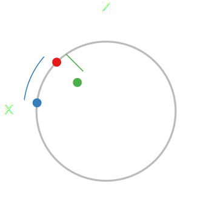

Fisher symmetry
and the geometry of quantum states
Jonathan A. Gross, Amir Kalev, Howard Barnum, Carlton M. Caves
Center for Quantum Information and Control, University of New Mexico

Local tomography

Have device to prepare a target state
Local tomography

Want to measure deviations
Distances between states
Is the blue or green state closer to the target?
Want an operational notion of distance
Statistical distance

How far apart are coins with different biases?
W. K. Wootters, Phys. Rev. D 23, 357 (1981)Statistical distance

How far apart are coins with different biases?
W. K. Wootters, Phys. Rev. D 23, 357 (1981)Statistical distance

Statistical distance
Fisher information
The Cramér–Rao bound is achievable
The Fisher information (FI) is given by
Multiple parameters

For multiple parameters, the FI becomes a matrix
This matrix can be used as a metric:
Including quantum mechanics
Random variable defined by a positive-operator-valued measure (POVM),
We write the FI generated by a particular POVM as
Measurement dependence

Measurement dependence

Measurement dependence

Measurement dependence

Quantum Fisher information

S. L. Braunstein and C. M. Caves, Phys. Rev. Lett. 72, 3439 (1994)
Uncertainty relations
Would like to have quantum-limited accuracy in all directions
Complementarity forbids this. A useful expression of complementarity is the Gill–Massar (GM) bound.
Gill–Massar bound
Assume Hilbert space of finite dimension
Can always choose parameters so .
is unphysical because
R. D. Gill and S. Massar, Phys. Rev. A 61, 042312 (2000)Fisher symmetry
Extract all information:
Measure with equal precision in all directions
Fisher symmetry
Fisher symmetry

Fisher symmetry
Can we do this?
Pure states: ✔

Li et al. have shown FSMs to exist for pure states in all dimensions and given an explicit construction
N. Li, C. Ferrie, J. A. Gross, A. Kalev, and C. M. Caves, arXiv:1507.06904Maximally mixed state: ✔
POVM is an FSM iff it is a 2-design
Examples: SIC-POVMs, MUBs, uniformly random basis
Qubits: ✔

Qubits: ✔

Symmetry of CFI
Consider tensor form of CFI
This is invariant under the Choi isomorphism
Asymmetry of QFI
For the QFI to be invariant under the Choi isomorphism, it must be that
Only true for qubits and at the maximally mixed state
Higher dimensions: ✘
What is the next-best thing?Purity for CFI
Want accuracy spread out
over all parameters as much as possible
Purity measures the uniformity of the eigenvalues of
Analogous quantity for the CFI
New idea of symmetry
Minimize the purity
of the CFI
Will this exist?
Since we are minimizing a quadratic function over a convex set, the minima exist, so now we just have to find them.
The hunt
Still not trivial to find
Strategy: perturb SIC-POVM as we leave maximally mixed
state such that the CFI purity
is minimized
What have we learned?
-
Limitations of strict symmetry requirements (or: why one should never trust qubits)
Pure states ✔ Maximally mixed state ✔ Qubits ✔ Full-rank higher dimension ✘ -
Promising preliminary perturbative results
What's next?
- Extend perturbative results
- Understand structure of CFI
- Employ tools to understand other problems in quantum information